가스기사 (2015-08-16 기출문제)
1과목: 가스유체역학
1. 일정한 온도와 압력 조건에서 하수 슬러리(slurry)와 같이 입계 전단응력 이상이 되어야만 흐르는 유체는?
- 뉴턴유체(Newtonian fluid)
- 팽창유체(dilatant fluid)
- 빙햄가소성유체(Bingham plastics)
- 의가소성유체(Pseudoplastic fluid)
(정답률: 77%)

2. 원심압축기의 폴리트로프 효율이 94%, 기계손실이 축둥력의 3.0%라면 전 폴리트로프 효율은 약 몇%인가?
- 88.9
- 91.2
- 93.1
- 94.7
(정답률: 75%)
3. 회전차(impeller)의 외경이 40㎝인 원심섬프가 1500rpm으로 회전할 때 물의 유량은 1.6m3/min이다. 펌프의 전양정이 50m이라고 할 때 수동력은 몇 마력(HP)인가?
- 15.5
- 16.5
- 17.5
- 18.5
(정답률: 59%)
4. 2차원 평면 유동장에서 어떤 이상 유체의 유속이 다음과 같이 주어질 때, 이 유동장의 흐름함수(stream function, Ψ)에 대한 식으로 옳은 것은? (단, u, v는 각각 2차원 직각좌표계(x, y)상에서 x방향과 y방향의 속도를 나타내고 K는 상수이다.)
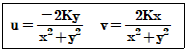
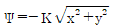
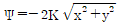
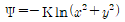
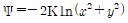
(정답률: 63%)
5. 펌프의 캐비테이션을 방지할 수 있는 방법이 아닌 것은?
- 펌프의 설치높이를 낮추어 흡입양정을 작게 한다.
- 펌프의 회전수를 낮추어 흡입비교회전도를 작게 한다.
- 양흡입 펌프 또는 2대 이상의 펌프를 사용한다.
- 흡입 배관계는 관경과 굽힘을 가능한 작게 한다.
(정답률: 70%)
6. 점성력에 대한 관성력의 상대적인 비를 나타내는 무차원의 수는?
- Reynolds수
- Froude수
- 모세관수
- Weber수
(정답률: 90%)
7. 비행기의 속도를 측정하고자 할 때 다음 중 가장 적합한 장치는?
- 피토정압관
- 벤튜리관
- 부르동(Bourdon)압력계
- 오리피스
(정답률: 81%)
8. 펌프에 관한 설명으로 옳은 것은?
- 벌류우트 펌프는 안내판이 있는 펌프이다.
- 베인펌프는 왕복펌프이다.
- 원심펌프의 비속도는 아주 크다.
- 축류펌프는 주로 대용량 저양정용으로 사용한다.
(정답률: 61%)
9. 압력의 단위 환산값으로 옳지 않은 것은?
- 1atm＝101.3kPa
- 760㎜Hg＝1.013bar
- 1torr＝1㎜Hg
- 1.013bar＝0.98kPa
(정답률: 79%)
10. 축류펌프에서 양정을 만드는 힘은?
- 원심력
- 항력
- 양력
- 점성력
(정답률: 71%)
11. 물속에 피토관(Pitot tube)을 설치하였더니 정체압이 1250㎝Aq이고, 이때의 유속이 4.9m/s이었다면 정압은 몇 ㎝Aq인가?
- 122.5
- 10⑤.0
- 1127.5
- 1225.0
(정답률: 49%)
12. 그림에서 비중이 0.9인 액체가 분출되고 있다. 원형면 1을 통하는 속도가 15m/s일 때 원형면 2를 통과하는 분출속도(m/s)는 얼마인가? (단, 비압축성 유체이고 각 단면에서의 속도는 균일하다고 가장한다.)
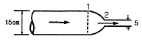
- 125
- 130
- 135
- 140
(정답률: 67%)
13. 내경 0.⑤26m인 철관 내를 점도가 0.01㎏/m·s이고 밀도가 1200㎏/m3인 액체가 1.16m/s의 평균속도로 흐를 때 Reynolds수는 약 얼마인가?
- 36.61
- 3661
- 732.2
- 7322
(정답률: 65%)
14. 어떤 매끄러운 수평 원관에 유체가 흐를 때 완전 난류유도(완전히 거친 난류유동)영역이었고 이때 손실수두가 10m이었다. 속도가 2배가 되면 손실수두는 얼마인가?
- 20m
- 40m
- 80m
- 160m
(정답률: 84%)
15. 프란틀의 혼합길이(Prandtl mixing length)에 대한 설명으로 옳지 않은 것은?
- 난류유동에 관련된다.
- 전단응력과 밀접한 관련이 있다.
- 벽면에서는 0이다.
- 항상 일정한 값을 갖는다.
(정답률: 71%)
16. 그림과 같이 수직벽의 양쪽에 수위가 다른 물이 있다. 벽면에 붙인 오리피스를 통하여 수위가 높은 족에서 낮은 쪽으로 물이 유출되고 있다. 이 속도 V2는? (단, 물의 밀도는 ρ, 중력가속도는 g라 한다.)
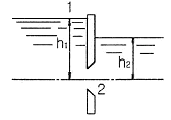
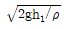
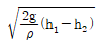
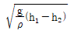
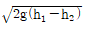
(정답률: 71%)
17. 관중의 난류영역에서의 패닝마찰계수(Fanning friction factor)에 직접적으로 영향을 미치지 않는 것은?
- 유체의 동점도
- 유체의 흐름속도
- 관의 길이
- 관내부의 상대조도(relative Roughness)
(정답률: 56%)
18. 유체의 점성계수와 동점성계수에 관한 설명 중 옳은 것은? (단, M, L, T는 각각 질량, 길이, 시간을 나타낸다.)
- 상온에서의 공기의 점성계수는 물의 점성계수보다 크다.
- 점성계수의 차원은 ML-1T-1이다.
- 동점성계수의 차원은 L2T-2이다.
- 동점성계수의 단위에는 Poise 가 있다.
(정답률: 82%)
19. 베르누이의 정리 식에서 V2/(2g)는 무엇을 의미하는가?
- 압력수두
- 위치수두
- 속도수두
- 전수두
(정답률: 86%)
20. 다음은 면적이 변하는 도관에서의 흐름에 관한 그림이다. 그림에 대한 설명으로 옳지 않은 것은?
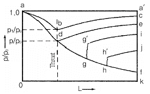
- d점에서의 압력비를 임계압력비라 한다.
- gg' 및 hh'는 파동(wave morion)과 충격(shock)을 나타낸다.
- 선 abc상의 다른 모든 점에서의 흐름은 아음속이다.
- 초음속인 경우 노즐의 확산부의 단면적이 증가하면 속도는 감소한다.
(정답률: 79%)
2과목: 연소공학
21. 이상기체 10㎏을 240K만큼 온도를 상승시키는데 필요한 열량이 정압인 경우와 정적인 경우에 그 차이가 415kJ이었다. 이 기체의 가스상수는 약 몇 kJ/㎏·/K인가?
- 0.173
- 0.287
- 0.381
- 0.423
(정답률: 57%)
22. 상온, 상압의 공기 중에서 연소범위의 폭이 가장 넓은 가스는?
- 벤젠
- 프로판
- n-부탄
- 메탄
(정답률: 61%)
23. 프로판과 부탄이 혼합된 경우로서 부탄의 함유량이 많아지면 발열량은?
- 커진다.
- 적어진다.
- 일정하다.
- 커지다가 줄어든다.
(정답률: 90%)
24. 연료가 완전 연소할 때 이론상 필요한 공기량을 M0(m3), 실제로 사용한 공기량을 M(m3)라 하면 과잉공기 백분율을 바르게 표시한 식은?
- (M/M0)×100
- (M0/M)×100
- [(M-M0)/M]×100
- [(M-M0)/M0]×100
(정답률: 74%)
25. 오토(otto)사이클에서 압축비가 7일 때의 열효율은 약 몇 %인가? (단, 비열비 k는 1.4이다.)
- 29.7
- 44.0
- 54.1
- 94.0
(정답률: 69%)
26. 냉동사이클의 이상적인 사이클은?
- 카르노 사이클
- 역카르노 사이클
- 스털링 사이클
- 브레이튼 사이클
(정답률: 73%)
27. 에탄 5vol%, 프로판 65vol%, 부탄30vol%혼합가스의 공기 중에서 폭발범위를 표를 참조하여 구하면?
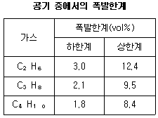
- 1.95~8.93vol%
- 2.03~9.25vol%
- 2.55~10.85vol%
- 2.67~11.33vol%
(정답률: 76%)
28. 확산연소에 대한 설명으로 옳지 않은 것은?
- 조작이 용이하다.
- 연소 부하율이 크다.
- 역화의 위험성이 적다.
- 화염의 안정범위가 넓다.
(정답률: 68%)
29. 미분탄 연소의 특징에 대한 설명으로 틀린 것은?
- 가스화 속도가 빠르고 연소실의 공간을 유효하게 이용할 수 있다.
- 화격자연소보다 낮은 공기비로써 높은 연소효율을 얻을 수 있다.
- 명료한 화염이 형성되지 않고 화염이 연소실 전체에 퍼진다.
- 연소완료시간은 표면연소속도에 의해 결정된다.
(정답률: 43%)
30. 다음은 Carnot cycle의 압력-부피선도이다. 이 중 등온팽창 과정은?
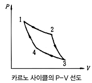
- 1 → 2
- 2 → 3
- 3 → 4
- 4 → 1
(정답률: 68%)
31. 폭발등급은 안전간격에 따라 구분할 수 있다. 다음 중 안전간격이 가장 넓은 것은?
- 이황화탄소
- 수성가스
- 수소
- 프로판
(정답률: 68%)
32. 어떤 경우에는 실험 데이터가 없어 연소한계를 추산해야 할 필요가 있다. 존스(Johnes)는 많은 탄화수소 증기의 연소하한계(LFL)와 연소상한계(UFL)는 연료의 양론농도(Cst)의 함수라는 것을 발견하였다. 다음 중 존스 연소하한계(LFL) 관계식을 옳게 나타낸 것은? (단, Cst는 연료와 공기로 된 완전 연소가 일어날 수 있는 혼합기체에 대한 연료의 부피 %이다.)
- LFL＝0.55Cst
- LFL＝1.55Cst
- LFL＝2.50Cst
- LFL＝3.50Cst
(정답률: 66%)
33. 착화온도가 낮아지는 경우로 볼 수 없는 것은?
- 압력이 높을 경우
- 발열량이 높을 경우
- 산소농도가 높을 경우
- 분자구조가 간단할 경우
(정답률: 82%)
34. 공기비에 대한 설명으로 옳은 것은?
- 연료 1㎏ 당 완전연소에 필요한 공기량에 대한 실제 혼합된 공기량의 비로 정의된다.
- 연료 1㎏ 불완전연소에 필요한 공기량에 대한 실제 혼합된 공기량의 비로 정의된다.
- 기체 1m3당 실제로 혼합된 공기량에 대한 완전연소에 필요한 공기량의 비로 정의된다.
- 기체 1m3당 실제로 혼합된 공기량에 대한 불완전연소에 필요한 공기량의 비로 정의된다.
(정답률: 80%)
35. 폭발범위에 대한 설명으로 틀린 것은?
- 일반적으로 폭발범위는 고압일수록 넓어진다.
- 일산화탄소는 공기와 혼합 시 고압이 되면 폭발범위가 좁아진다.
- 혼합가스의 폭발범위는 그 가스의 폭굉범위보다 좁다.
- 상온에 비해 온도가 높을수록 폭발범위가 넓어진다.
(정답률: 74%)
36. 에틸렌(Ethylene) 1m3을 완전히 연소시키는데 필요한 공기의 양은 약 몇 m3인가? (단, 공기 중의 산소 및 질소는 각각 21vol%, 79vol%이다.)
- 9.5
- 11.9
- 14.3
- 19.0
(정답률: 57%)
37. 연료의 구비조건에 해당하는 것은?
- 발열량이 클 것
- 희소성이 있을 것
- 저장 및 운반 효율이 낮을 것
- 연소 후 유해물질 및 배출물이 많을 것
(정답률: 80%)
38. 액체상태의 프로판이 이론 공기연료비로 연소하고 있을 때 저발열량은 약 몇 kJ/㎏인가? (단, 이때 온도는 25℃이고, 이 연료의 증발엔탈피는 360kJ/㎏이다. 또한 기체상태의 C3H8의 형성엔탈피는 -103909kJ/kmol, CO2의 형성 엔탈피는 -393757kJ/kmol, 기체상태의 H2O의 형성 엔탈피는 -241971kJ/kmol이다.)
- 23501
- 46017
- 500002
- 21499155
(정답률: 72%)
39. 피열물의 가열에 사용된 유효열량이 7000kcal/㎏, 전입열량이 12000kcal/㎏일 때 열효율은 약 얼마인가?
- 49.2%
- 58.3%
- 67.4%
- 76.5%
(정답률: 84%)
40. 가스호환성이란 가스를 사용하고 있는 지역 내에서 가스기기의 성능이 보장되는 대체가스의 허용 가능성을 말한다. 호환성을 만족하기 위한 조건이 아닌 것은?
- 초기 점화가 안정되게 이루어져야 한다.
- 황염(yellow tip)과 그을음이 없어야 한다.
- 비화 및 역화(flash back)가 발생되지 않아야 한다.
- 웨버(Wobbe)지수가 ±15% 이내이어야 한다.
(정답률: 83%)
3과목: 가스설비
41. 수소가스 공급 시 용기의 충전구에 사용하는 패킹재료로서 가장 적당한 것은?
- 석면
- 고무
- 화이버
- 금속 평형 가스켓
(정답률: 66%)
42. 펌프를 운전할 때 펌프 내에 액이 충만 되지 않으면 공회전하여 펌프작업이 이루어지지 않는 현상을 방지하기 위하여 펌프 내에 액을 충만 시키는 것을 무엇이라 하는가?
- 서징(surging)
- 프라이밍(priming)
- 베이퍼록(Vaper lock)
- 캐비테이션(cavitation)
(정답률: 84%)
43. 내용적이 50L의 용기에 다공도가 80%인 다공성물질이 충전되어 있고 내용적의 40%만큼 아세톤이 차지할 때 이 용기에 충전되어 있는 아세톤의 양(㎏)은? (단, 아세톤 비중은 0.79이다.)
- 25.3
- 20.3
- 15.8
- 12.6
(정답률: 53%)
44. 터보 압축기의 특징에 대한 설명으로 틀린 것은?
- 원심형이다.
- 효율이 높다.
- 용량조정이 어렵다.
- 맥동이 없어 연속적으로 송출한다.
(정답률: 58%)
45. LP가스 1단 감압식 저압조정기의 입구압력은?
- 0.025MPa~1.56MPa
- 0.07MPa~1.56MPa
- 0.025MPa~0.35MPa
- 0.07MPa~0.35MPa
(정답률: 66%)
46. 겨울철 LPG 용기에 서릿발이 생겨 가스가 잘 나오지 않을 때 가스를 사용하기 위한 조치로 옳은 것은?
- 용기를 힘차게 흔든다.
- 연탄불로 쪼인다.
- 40℃ 이하의 열습포로 녹인다.
- 90℃ 정도의 물을 용기에 붓는다.
(정답률: 89%)
47. 호칭지름이 동일한 외경의 강관에 있어서 스케줄 번호가 다음과 같을 때 두께가 가장 두꺼운 것은?
- XXS
- XS
- Sch20
- Sch40
(정답률: 80%)
48. 일정한 용적의 실린더 내에 기체를 흡입한 다음 흡입구를 닫아 기체를 압축하면서 다른 토출구에 압축하는 형식의 압축기는?
- 용적형
- 터보형
- 원심식
- 축류식
(정답률: 84%)
49. 다음 반응으로 진행되는 접촉분해 반응 중 카본 생성을 방지하는 방법으로 옳은 것은?
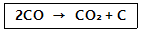
- 반응온도 : 낮게, 반응압력 : 높게
- 반응온도 : 높게, 반응압력 : 낮게
- 반응온도 : 낮게, 반응압력 : 낮게
- 반응온도 : 높게, 반응압력 : 높게
(정답률: 68%)
50. 용량기에 의한 액화석유가스 사용시설에서 가스계량기(30m3/h 미만) 설치장소로 옳지 않은 것은?
- 환기가 양호한 장소에 설치하였다.
- 전기접속기와 50㎝ 떨어진 위치에 설치하였다.
- 전기계량기와 50㎝ 떨어진 위치에 설치하였다.
- 바닥으로부터 160㎝ 이상 200㎝ 이내인 위치에 설치하였다.
(정답률: 63%)
51. 전구용 봉입가스, 금속의 정련 및 열처리 시공기 외의 접촉방지를 위한 보호가스로 주로 사용되는 가스의 방전관 발광색은?
- 보라색
- 녹색
- 황색
- 적색
(정답률: 64%)
52. 고온, 고압에서 수소가스 설비에 탄소강을 사용하면 수소취성을 일으키게 되므로 이것을 방지하기 위하여 첨가시키는 금속 원소로서 적당하지 않은 것은?
- 몰리브덴
- 크립톤
- 텅스텐
- 바나듐
(정답률: 73%)
53. 공기를 액화시켜 산소와 질소를 분리하는 원리는?
- 액체산소와 액체질소의 비중 차이에 의해 분리
- 액체산소와 액체질소의 비등점의 차이에 의해 분리
- 액체산소와 액체질소의 열용량 차이로 분리
- 액체산소와 액체질소의 전기적 성질 차이에 의해 분리
(정답률: 83%)
54. 용기용 밸브가 B형이며, 가연성가스가 충전되어 있을 때 충전구의 형태는?
- 숫나사 - 오른나사
- 숫나사 - 왼나사
- 암나사 - 오른나사
- 암나사 - 왼나사
(정답률: 74%)
55. 공기의 액화분리 장치의 폭발 방지 대책으로 가장 적절한 것은?
- 공기 취입구로부터 아세틸렌 및 탄화수소 혼입이 없도록 관리한다.
- 산소 압축기 윤활제로 식물성 기름을 사용한다.
- 내부장치는 년 1회 정도 세척하는 것이 좋고 세정제로 아세톤을 사용한다.
- 액체산소 중에 오존(O3)의 혼입은 산소농도를 증가시키므로 안전하다.
(정답률: 73%)
56. 고압가스용 기화장치의 구성요소에 해당하지 않는 것은?
- 기화통
- 열매온도 제어장치
- 액유출 방지장치
- 긴급차단장치
(정답률: 58%)
57. 도시가스 배관에서 가스 공급이 불량하게 되는 원인으로 가장 거리가 먼 것은?
- 배관의 파손
- Terminal Box의 불량
- 정압기의 고장 또는 능력부족
- 배관 내의 물의 고임, 녹으로 인한 폐쇄
(정답률: 86%)
58. 가스렌지의 열효율을 측정하기 위하여주전자에 순수 1000g을 넣고 10분간 가열하였더니 처음 15℃인 물의 온도가 65℃가 되었다. 이 가스렌지의 열효율은 약 몇 %인가? (단, 물의 비열은 1kcal/㎏·℃, 가스사용량은 0.008m3, 가스발열량은 13000kcal/m3이며, 온도 및 압력에 대한 보정치는 고려하지 않는다.)
- 42
- 45
- 48
- 52
(정답률: 52%)
59. 흡입압력 1⑤kPa, 토출압력 480kPa, 흡입공기량 3m3/min인 공기압축기의 등온압축일은 약 몇 kW인가?
- 2
- 4
- 6
- 8
(정답률: 29%)
60. 가스설비에 대한 전기방식의 방법이 아닌 것은?
- 희생양극법
- 외부전원법
- 배류법
- 압착전원법
(정답률: 74%)
4과목: 가스안전관리
61. 재료의 허용응력(σa), 재료의 기준강도(σe)밑 안전율(S)의 관계를 옳게 나타낸 식은?
- σa＝S/σe
- σa＝σe/S
- σa＝1-(S/σe)
- σa＝1-(σe/S)
(정답률: 75%)
62. 가정용 가스보일러에서 발생되는 질식사고 원인 중 가장 높은 비율은?
- 제품불량
- 시설 미비
- 공급자 부주의
- 사용자 취급 부주의
(정답률: 88%)
63. 물분무장치는 당해 저장탱크의 외면에서 몇 m이상 떨어진 안전한 위치에서 조작할 수 있어야 하는가?
- 5
- 10
- 15
- 20
(정답률: 55%)
64. 고압가스용기의 보관장소에 용기를 보관할 경우 준수할 사항 중 틀린 것은?
- 충전용기와 잔가스용기는 각각 구분하여 용기보관장소에 놓는다.
- 용기보관장소에는 계량기 등 작업에 필요한 물건 외에는 두지 아니한다.
- 용기보관장소의 주위 2m이내에는 화기 또는 인화성물질이나 발화성 물질을 두지 아니한다.
- 가연성가스 용기보관장소에는 비방폭형 손전등을 사용한다.
(정답률: 80%)
65. 아세틸렌 충전작업 시 아세틸렌을 몇 MPa 압력으로 압축하는 때에 질소, 메탄, 에틸렌 등의 희석제를 첨가하는가?
- 1
- 1.5
- 2
- 2.5
(정답률: 73%)
66. 수소가스 용기가 통상적인 사용 상태에서 파열사고를 일으켰다. 그 사고의 원인으로 가장 거리가 먼 것은?
- 용기가 수소취성을 일으켰다.
- 과충전되었다.
- 용기를 난폭하게 취급하였다.
- 용기에 균열, 녹 등이 발생하였다.
(정답률: 72%)
67. 고압가스 충전용기의 운반기준 중 용기운반 시 주의사항으로 옳은 것은?
- 염소와 아세틸렌은 동일 차량에 적재하여 운반하여도 된다.
- 운반 중의 충전용기는 항상 40℃이하를 유지하여야 한다.
- 가연성가스 또는 산소를 운반하는 차량에는 방독면 및 고무장갑 등의 보호구를 휴대하여야 한다.
- 밸브가 돌출한 충전용기는 캡을 부착시킬 필요가 없다.
(정답률: 84%)
68. 프로판가스의 충전용 용기로 주로 사용되는 것은?
- 리벳용기
- 주철용기
- 이음새 없는 용기
- 용접용기
(정답률: 76%)
69. 산소제조시설 및 기술기준에 대한 설명으로 틀린 것은?
- 공기액화분리장치기에 설치된 액화산소통안의 액화산소 5중 아세틸렌의 질량이 50mg 이상이면 액화산소를 방출한다.
- 석유류 또는 글리세린은 산소압축기 내부 윤활유로 사용하지 아니한다.
- 산소의 품질검사 시 순도가 99.5% 이상이어야 한다.
- 산소를 수송하기 위한 배관과 이에 접속하는 압축기와의 사이에는 수취기를 설치한다.
(정답률: 75%)
70. 보일러의 파일럿(pilot)버너 또는 메인(main)버너의 불꽃이 접촉할 수 있는 부분에 부착하여 불이 꺼졌을 때 가스가 누출되는 것을 방지하는 안전장치의 방식이 아닌 것은?
- 바이메탈(bimetal)식
- 열전대(thermocouple)식
- 플레임로드(flame rod)식
- 퓨즈메탈(fuse metal)식
(정답률: 60%)
71. 수소의 취성을 방지하는 원소가 아닌 것은?
- 텅스텐(W)
- 바나듐(V)
- 규소(Si)
- 크롬(Cr)
(정답률: 67%)
72. 독성가스 중 다량의 가연성 가스를 차량에 적재하여 운반하는 경우 휴대하여야 하는 소화기는?
- BC용, B-3이상
- BC용, B-10이상
- ABC용, B-3이상
- ABC용, B-10이상
(정답률: 81%)
73. 수소의 일반적 성질에 대한 설명으로 틀린 것은?
- 열에 대하여 안정하다.
- 가스 중 비중이 가장 적다.
- 무색, 무미, 무취의 기체이다.
- 기체 중 확산속도가 가장 느리다.
(정답률: 84%)
74. 고압가스용 이음매 없는 용기 재검사 기준에서 정한 용기의 상태에 따른 등급분류 중 3급에 해당하는 것은?
- 깊이가 0.1㎜ 미만이라고 판단되는 흠
- 깊이가 0.3㎜ 미만이라고 판단되는 흠
- 깊이가 0.5㎜ 미만이라고 판단되는 흠
- 깊이가 1㎜ 미만이라고 판단되는 흠
(정답률: 60%)
75. 냉동기의 냉매설비는 진동, 충격, 부식 등으로 냉매가스가 누출되지 않도록 조치하여야 한다. 다음 중 그 조치 방법이 아닌 것은?
- 주름관을 사용한 방진 조치
- 냉매설비 중 돌출부위에 대한 적절한 방호 조치
- 냉매가스가 누출될 우려가 있는 부분에 대한 부식 방지 조치
- 냉매설비 중 냉매가스가 누출될 우려가 있는 곳에 차단밸브 설치
(정답률: 59%)
76. 가연성가스의 제조설비 중 검지경보장치가 방폭성능구조를 갖추지 아니하여도 되는 가연성 가스는?
- 암모니아
- 아세틸렌
- 염화에탄
- 아크릴알데히드
(정답률: 76%)
77. 충전용기 등을 차량에 적재하여 운행할 때 운반책임자를 동승하는 차량의 운행에 있어서 현저하게 우회하는 도로란 이동거리가 몇 배 이상인 경우를 말하는가?
- 1
- 1.5
- 2
- 2.5
(정답률: 74%)
78. 저장능력이 4톤인 액화석유가스 저장탱크1기와 산소탱크 1기의 최대지름이 각각 4m, 2m일 때 상호간의 최소 이격거리는?
- 1m
- 1.5m
- 2m
- 2.5m
(정답률: 75%)
79. 가연성 가스 제조소에서 화재의 원인이 될 수 있는 착화원이 모두 나열된 것은?
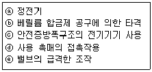
- ⓐ, ⓓ, ⓔ
- ⓐ, ⓑ, ⓒ
- ⓐ, ⓒ, ⓓ
- ⓑ, ⓒ, ⓔ
(정답률: 85%)
80. 다음 중 특수고압가스가 아닌 것은?
- 압축모노실란
- 액화알진
- 게르만
- 포스겐
(정답률: 82%)
5과목: 가스계측기기
81. 가스크로마토그래피의 분리관에 사용되는 충전담체에 대한 설명 중 틀린 것은?
- 화학적으로 활성을 띠는 물질이 좋다.
- 큰 표면적을 가진 미세한 분말이 좋다.
- 입자크기가 균등하면 분리작용이 좋다.
- 충전하기 전에 비휘발성 액체로 피복해야 한다.
(정답률: 75%)
82. 열전대 온도계의 특징에 대한 설명으로 틀린 것은?
- 접촉식 온도계 중 가장 낮은 온도에 사용된다.
- 원격측정용으로 적합하다.
- 보상 도선을 사용한다.
- 냉접점이 있다.
(정답률: 75%)
83. 태엽의 힘으로 통풍하는 통풍형 건습구 습도계로서 휴대가 편리하고 필요풍속이 약 3m/s인 습도계는?
- 아스만 습도계
- 모발 습도계
- 간이건습구 습도계
- Dewcel식 노점계
(정답률: 69%)
84. 방사온도계의 원리는 방사열(전방사에너지)과 절대온도의 관계인 스테판-볼츠만의 법칙을 응용한 것이다. 이때 전방사에너지 Q는 절대온도 T의 몇 제곱에 비례하는가?
- 2
- 3
- 4
- 5
(정답률: 67%)
85. 적외선분광분석법에 대한 설명으로 틀린 것은?
- 적외선을 흡수하기 위해서는 쌍극자모멘트의 알짜변화를 일으켜야 한다.
- H2, O2, N2, Cl2 등의 2원자 분자는 적외선을 흡수하지 않으므로 분석이 불가능하다.
- 미량성분의 분석에는 셀(cell)내에서 다중 반사되는 기체 셀을 사용한다.
- 흡광계수는 셀압력과는 무관하다.
(정답률: 64%)
86. 액체산소, 액체질소 등과 같이 초저온 저장탱크에 주로 사용되는 액면계는?
- 마그네틱 액면계
- 햄프슨식 액면계
- 벨로우즈식 액면계
- 슬립튜브식 액면계
(정답률: 69%)
87. 다음그림은 자동 제어계의 특성에 대하여 나타낸 것이다. 그림 중 B는 입력신호의 변화에 대하여 출력신호의 변화가 즉시 따르지 않는 것을 나타내는 것으로 이를 무엇이라고 하는가?
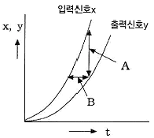
- 정오차
- 히스테리시스 오차
- 동오차
- 지연(遲延)
(정답률: 75%)
88. 다음 중 프로세스 제어량으로 보기 어려운 것은?
- 온도
- 유량
- 밀도
- 액면
(정답률: 64%)
89. 다음 중 미량의 탄화수소를 검지하는 데 가장 적당한 검출기는?
- TCD 검출기
- ECD 검출기
- FID 검출기
- NOD 검출기
(정답률: 74%)
90. 액면계 선정 시 고려사항이 아닌 것은?
- 동특성
- 안전성
- 측정범위와 정도
- 변동 상태
(정답률: 59%)
91. 다음 중 일반적인 가스미터의 종류가 아닌 것은?
- 스크류식 가스미터
- 막식 가스미터
- 습식 가스미터
- 추량식 가스미터
(정답률: 67%)
92. 열전 온도계의 원리로 맞는 것은?
- 열복사를 측정한다.
- 두 물체의 열팽창량을 이용한다.
- 두 물체의 열기전력을 이용한다.
- 두 물체의 열전도율 차이를 이용한다.
(정답률: 76%)
93. 레이더의 방향 및 선박과 항공기의 방향제어 등에 사용되는 제어는 제어량 성질에 따라 분류할 때 어떤 제어방식에 해당하는가?
- 정치제어
- 추치제어
- 자동조정
- 서보기구
(정답률: 71%)
94. 가스누출을 검지할 때 사용되는 시험지가 아닌 것은?
- KI 전분지
- 리트머스지
- 파라핀지
- 염화파라듐지
(정답률: 74%)
95. 가스미터의 검정에서 피시험미터의 지시량이 1m3이고 기준기의 지시량이 750L일 때 기차(器差)는 약 몇 %인가?
- 2.5
- 3.3
- 25.0
- 33.3
(정답률: 66%)
96. 유량계를 교정하는 방법 중 기체 유량계의 교정에 가장 적합한 것은?
- 저울을 사용하는 방법
- 기준탱크를 사용하는 방법
- 기준 체적관을 사용하는 방법
- 기준 유량계를 사용하는 방법
(정답률: 65%)
97. 자동제어의 각 단계가 바르게 연결된 것은?
- 비교부 - 전자유량계
- 조작부 - 열전대 온도계
- 검출부 - 공기압식 자동밸브
- 조절부 - 비례미적분제어(PID제어)
(정답률: 71%)
98. 물이 흐르는 수평관의 2개소에 압력차를 측정하기 위하여 수은을 넣은 마노미터를 부착시켰더니 수은주의 높이차(h)가 600mm이었다. 이때의 차압(P1-P2)은 약 몇 ㎏f/cm2인가? (단, Hg의 비중은 13.6이다.)
- 0.63
- 0.76
- 0.86
- 0.97
(정답률: 55%)
99. 고속회전이 가능하여 소형으로 대용량을 계량할 수 있기 때문에 보일러의 공기조화 장치와 같은 대량가스 수요처에 적합한 가스미터는?
- 격막식 가스미터
- 루츠식 가스미터
- 오리피스식 가스미터
- 터빈식 가스미터
(정답률: 78%)
100. 가스크로마토그래피법의 검출기에 대한 설명으로 옳은 것은?
- 불꽃이온화 검출기는 감도가 낮다.
- 전자포착 검출기는 직선성이 좋다.
- 열전도도 검출기는 수소와 헬륨이 검출한계가 가장 낮다.
- 불꽃광도 검출기는 모든 물질에 적용된다.
(정답률: 56%)